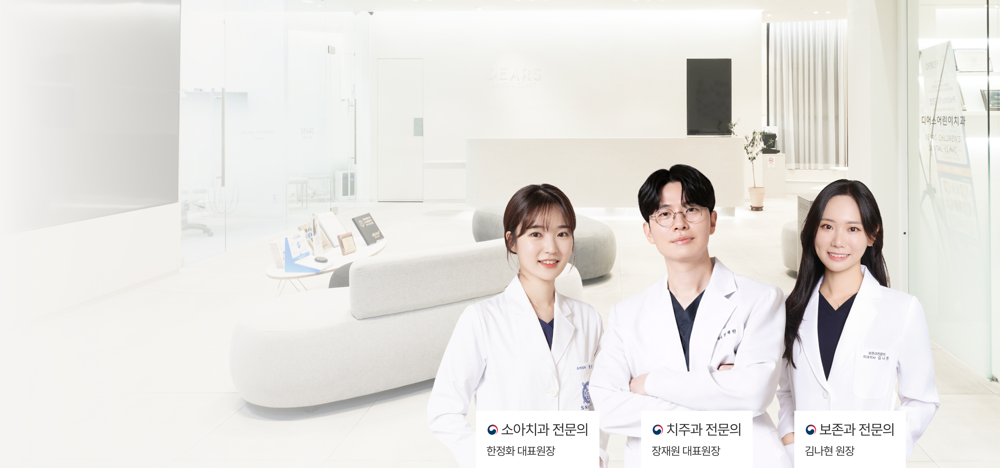
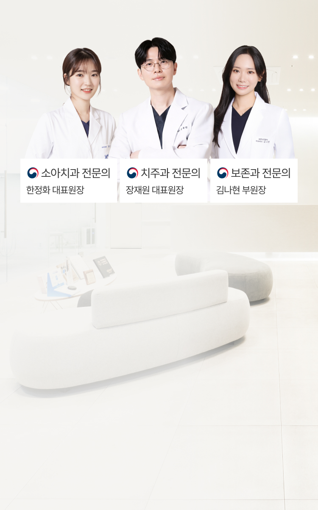
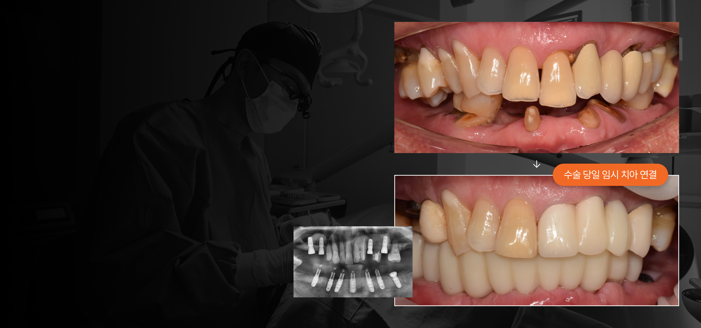
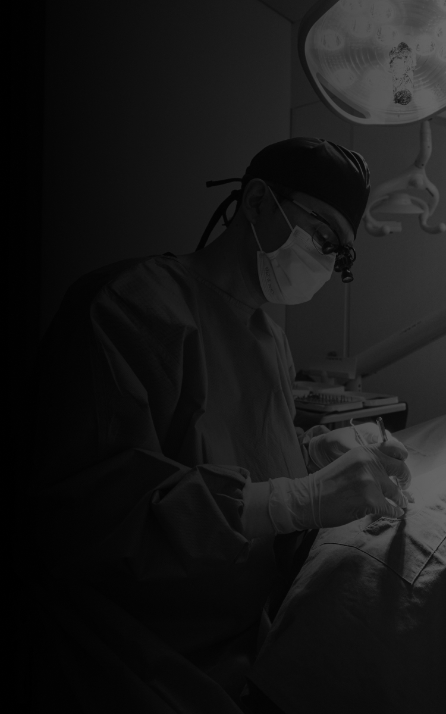
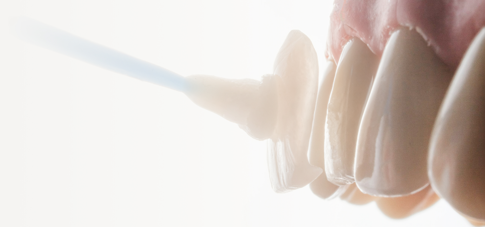
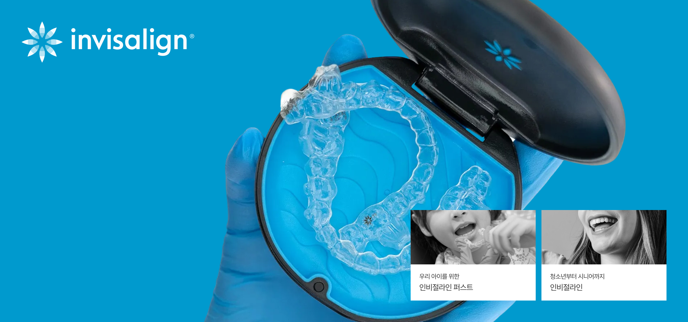
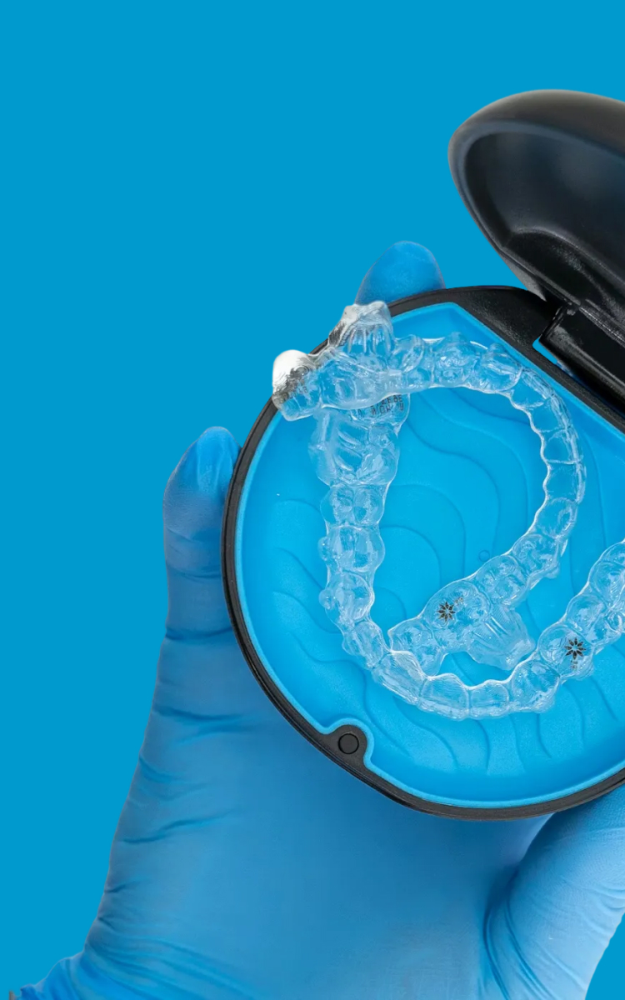

일요일 공휴일 진료
평일 야간 진료
분과별 전문의 협진
우리 아이의 첫 치료부터 어르신까지
온가족이 함께 다니는 치과.
디어스는 각 분야 전문의의 협진을 바탕으로
진심이 담긴 진료와 신뢰할 수 있는
결과를 약속드립니다.


원데이 임플란트
임플란트 식립부터
당일 임시치아까지
접착제 없이 잇몸 염증을 최소화한
나사유지형 임플란트로
오래도록 건강한 임플란트를 완성합니다.

무삭제 최소삭제
라미네이트
우리는 ‘티 나는 아름다움'을 만들지 않습니다.
단 한 사람, 자연스럽게 스며드는 미소,
디어네이트는 그 조화로움을 만듭니다.


보이지 않는
글로벌 투명교정
아이부터 시니어까지,
편안하고 정밀한 인비절라인 교정